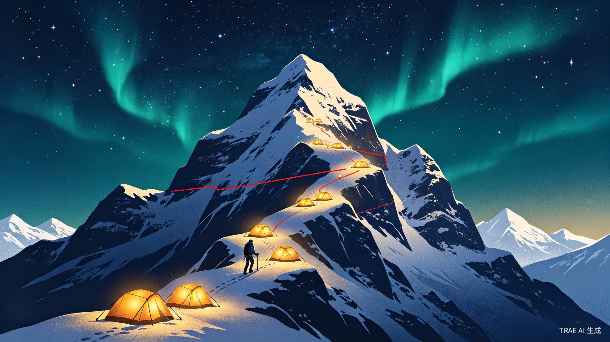

「拾级」AI 目标拆解成长工具
融合「智能目标拆解 + 游戏化叙事 + 社交共享」三大能力，输入一个大目标，自动生成全套可执行待办，把每一次成长具象成一场「攀登人生主峰」的探险。
拾级而上，每一步都算数。
产品定位与核心理念
「拾级」是一款面向零规划能力普通用户的 AI 目标拆解与成长陪伴工具。产品完美贴合"人人都可以创造"的大赛主题 —— 用户无需掌握项目管理或目标拆解能力，借助 AI 就能创造属于自己的成长路径，把"想做到"变成"做得到"。
核心理念：拾级而上，每一步都算数。
我们不要求用户成为自律大师，而是通过 AI 帮每个人找到属于自己的节奏，用最小的启动成本开启成长之路。真正的强大不是永不坠落，而是每次跌落都能重新向上。
核心痛点与市场空白
现有 Todo 与目标管理工具普遍存在五大痛点，也是本产品的核心切入机会：
绝大多数人只会喊口号（"我要考公""我要减肥"），但不知道如何拆成阶段任务、落地到每日行动，计划永远停在第一步。
长期目标周期长达数月，短期内看不到结果，正向反馈不足，绝大多数人会在中途放弃。
传统打卡工具以"连续天数"为核心，一次断签、一天没完成任务，就会让用户产生强烈挫败感，直接放弃整个目标。
专业项目管理工具过于复杂，学习成本高；普通清单工具只有记录功能，无法帮用户解决"不知道做什么"的核心问题。
缺乏情绪价值和仪式感，普通人的努力"不值得被庆祝"；一个人坚持很难，但现有社交功能要么内卷攀比，要么过于复杂。
核心功能一：AI 四级智能拆解引擎
3.1 结构化目标输入：三步保证拆解精准度
摒弃光秃秃的单行输入框，用极简三步引导用户提供关键信息，从根源避免 AI 生成空泛无效的待办：
核心目标
一句话描述最终结果，如"3 个月备考事业单位 C 类""2 个月瘦 12 斤""1 个月入门 Python"
当前基础
用户现有水平/现状，如"零基础，职测裸考 50 分""无运动习惯，体重 130 斤"
约束条件
截止时间、每日可投入时长、特殊限制，如"每天只能学 2 小时""不接受节食"
同时内置高频目标模板库，覆盖备考、技能学习、健身减脂、职场项目、生活养成 5 大类，用户一键选用即可快速启动，零门槛上手。
3.2 四级拆解逻辑：落地到最小行动单元
这是产品的核心竞争力，严格遵循「总目标 → 里程碑 → 周任务 → 日待办」四级拆解逻辑，拒绝模糊表述，所有任务均满足"可直接执行、可验收、时长明确"的标准。
flowchart TD
A["🎯 总目标
明确验收标准"] --> B["🏆 里程碑 × 3-5
可量化达标条件"]
B --> C["📅 周任务
匹配每日可用时长"]
C --> D["✅ 日待办
具体动作 + 预计时长 + 执行指引"]
新手友好规则：首周任务量自动减半，第一天仅安排 1 个 10 分钟可完成的轻量任务，用"微启动"破解拖延症的"开头难"魔咒。
拆解示例对比
| 拆解层级 | 反例（模糊无效） | 正例（精准可执行） |
|---|---|---|
| 日待办 | 复习职测 | 观看资料分析速算技巧网课第 2 节，完成课后 10 道练习题，预计 30 分钟 |
| 周任务 | 多刷题 | 完成资料分析专项练习 3 套（共 45 题），整理错题并归纳高频考点，总耗时约 4.5 小时 |
| 里程碑 | 学好职测 | 资料分析正确率稳定在 80% 以上，单篇作答时间控制在 25 分钟内 |
3.3 动态校准机制：计划适配人，而非人适配计划
这是拉开与普通 AI Todo 差距的关键功能，解决"计划赶不上变化"的普遍问题：
flowchart LR
A["📊 周度自动复盘"] --> B{"完成率 < 50%
连续两周?"}
B -- 是 --> C["⬇️ 自动下调任务量"]
B -- 否 --> D{"完成率 > 90%
连续两周?"}
D -- 是 --> E["⬆️ 小幅提升难度"]
D -- 否 --> F["✅ 维持当前节奏"]
A --> G["👤 手动反馈
太简单 / 刚好 / 太难"]
G --> H["🔄 一键重生成
对应周期任务"]
核心功能二：游戏化升级 —— 主峰攀登探险
在 AI 拆解引擎的基础上，融入「游戏人生 + 宏大叙事 + 社交共享」三大元素，把每一次个人成长具象成一场「攀登人生主峰」的探险。游戏化元素全程服务于降低行动门槛、强化坚持动力、放大成就价值，不脱离工具本质。

4.1 核心世界观
人生 = 广袤峰群
每个大目标都是一座独立山峰，难度对应海拔：小目标丘陵（1000 米）、中期高山（5000 米）、长期极峰（8000 米）
执行 = 登山爬升
完成每日待办 = 获得爬升高度，周任务 = 抵达营地，里程碑 = 冲顶节点，完成总目标 = 成功登顶
放弃 = 生死线博弈
连续断签 = 进入「生死线区域」；重新启动 =「跨越生死线」，真正的强大是每次跌落都能重新向上
4.2 山峰匹配与登山路线图
用户输入大目标后，AI 自动判定难度、周期，匹配对应「山峰等级」与专属命名，并生成登山路线图：
| 用户输入 | AI 匹配山峰 | 海拔等级 |
|---|---|---|
| 3 个月备考事业单位 | 体制主峰 | 海拔 7200 米 |
| 2 个月瘦 15 斤 | 身形极峰 | 海拔 6800 米 |
| 半年入门独立开发 | 代码雪峰 | 海拔 7500 米 |
flowchart TD
A["🏔️ 山脚起点
当前基础状态"] --> B["⛺ 营地 1
里程碑：基础通关"]
B --> C["⛺ 营地 2
里程碑：专项突破"]
C --> D["🔴 生死线
放弃高发期预警"]
D --> E["⛺ 营地 3
里程碑：冲刺准备"]
E --> F["🏔️ 峰顶
终极目标验收"]
4.3 每日行动：海拔爬升
每完成 1 项日待办，自动累计「爬升高度」，路线图上的人物图标同步前进。当日任务全部完成，解锁「当日营地」，生成一张记录卡，标注今日海拔、累计进度、剩余距离。
4.4 生死线机制（核心亮点）
把抽象的「超越生死」转化为用户可感知的成长体验：
flowchart LR
A["连续 2 天未完成
进度严重滞后"] --> B["🔴 进入生死线区域"]
B --> C{"用户选择"}
C -- 继续停滞 --> D["⚠️ 滑坠风险
回到山脚"]
C -- 完成任意 1 项轻量任务 --> E["✨ 跨越生死线"]
E --> F["🏆 解锁
「生死线跨越者」成就"]
F --> G["继续攀登"]
生死线三层设计
预警：连续 2 天未完成任务时，路线图出现红色生死线提示，文案不做指责，只做唤醒 —— "你已进入高风险区域，再往前一步可能滑坠山脚，但只要迈出一小步，就能跨越生死线"。
跨越成就：连续停滞 ≥ 3 天后，完成任意 1 项轻量任务，自动解锁「生死线跨越者」成就 —— 这不是对"偷懒"的惩罚，而是对"重启"的嘉奖。
终极生死挑战：针对周期 ≥ 3 个月的长周期目标，设置「冲顶生死段」（最后 10% 进度），成功通过即可解锁「向死而生」终极成就。
核心功能三：分层成就激励体系
成就系统与目标进度深度绑定，融入山峰、探险、生死主题，形成五大系列成就图鉴，所有成就均支持一键生成分享卡片：
差异化竞争优势
| 对比维度 | 传统 Todo 工具 | 普通 AI 待办工具 | 「拾级」 |
|---|---|---|---|
| 核心逻辑 | 用户手动填任务，工具仅做记录 | 基于用户输入生成零散待办 | 自动完成全链路拆解，从目标到行动一步到位 |
| 颗粒度 | 完全由用户决定，普遍空泛 | 颗粒度不均，容易脱离实际 | 统一拆到最小行动单元，匹配用户可用时长 |
| 激励逻辑 | 强调连续打卡，断签焦虑强 | 基本无专属激励体系 | 分层成就 + 容错机制，主打反焦虑、鼓励重启 |
| 使用门槛 | 需要用户自己会做计划 | 需要用户会写精准提示词 | 三步引导式输入，零基础直接用 |
| 社交设计 | 无或仅分享 | 无 | 轻社交 + 弱攀比 + 强共鸣，互相托底而非攀比 |
用「登山探险」完整叙事贯穿全流程，「最高峰」「生死线」和目标执行、心理状态深度绑定，沉浸感远超普通产品。
摒弃排行榜、时长比拼，主打「陪伴感」和「重启鼓励」，社交核心是互相托底而非互相攀比。
用「征服高峰」「跨越生死」的宏大叙事放大普通人的日常努力，让每一次小完成都有仪式感。
大赛各阶段落地规划
- 产出完整产品需求文档（PRD），梳理全链路产品逻辑
- 制作 3 套高频目标拆解样例（事业单位备考、四级英语、入门 Python）
- 生成交互与演示素材：页面交互说明、用户使用流程
- 实现目标输入、AI 智能拆解、待办打卡、成就墙四大核心页面
- 接入大模型 API 完成自动拆解能力
- 内置 3 套预制目标模板，保证现场演示流畅稳定
- 功能迭代：多目标管理、数据可视化统计、成就卡片分享
- 用户验证：小范围用户测试数据与优化记录
- 价值延伸：拓展公益适配场景（青少年学习规划、老年数字技能学习）
核心功能四：轻社交、弱攀比、强共鸣
主打「轻量化分享 + 同频陪伴」，避免内卷焦虑，核心分为三层：
每解锁一个成就、抵达一个里程碑、完成一次登顶，自动生成专属分享卡片，适配朋友圈、小红书等平台。
创建 / 加入「探险小队」（最多 8 人），互相查看目标进度与成就动态。
针对同一类目标自动匹配「同峰攀登者」，匿名展示共有多少人在攀登同一座山峰。